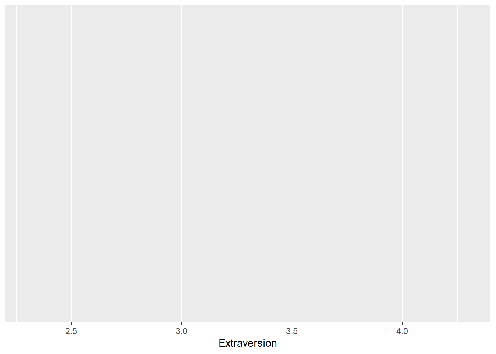
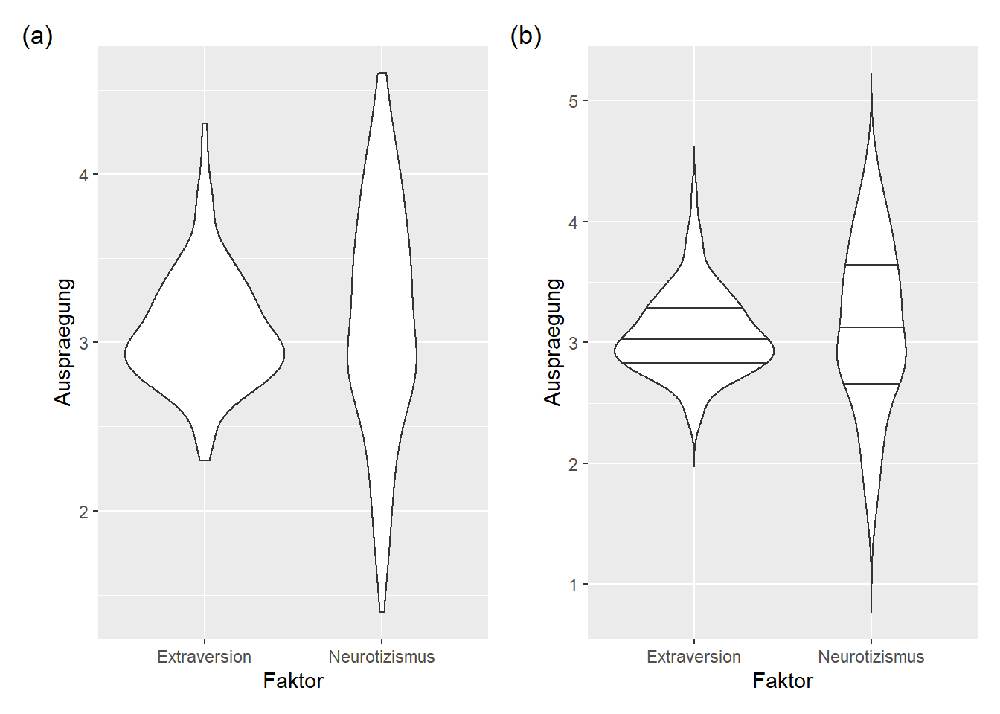
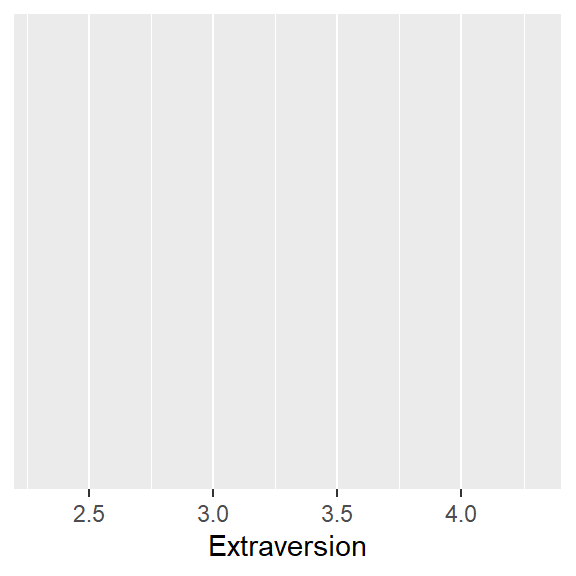
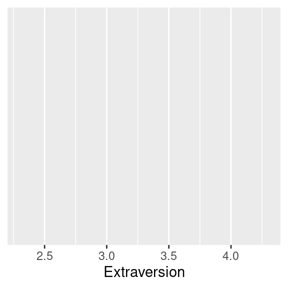
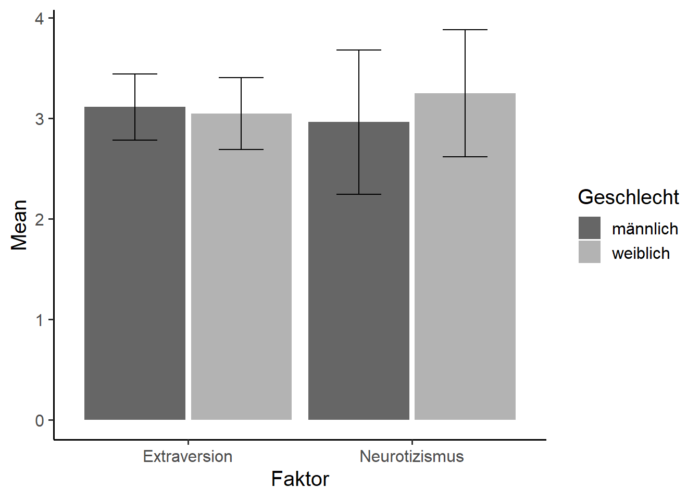
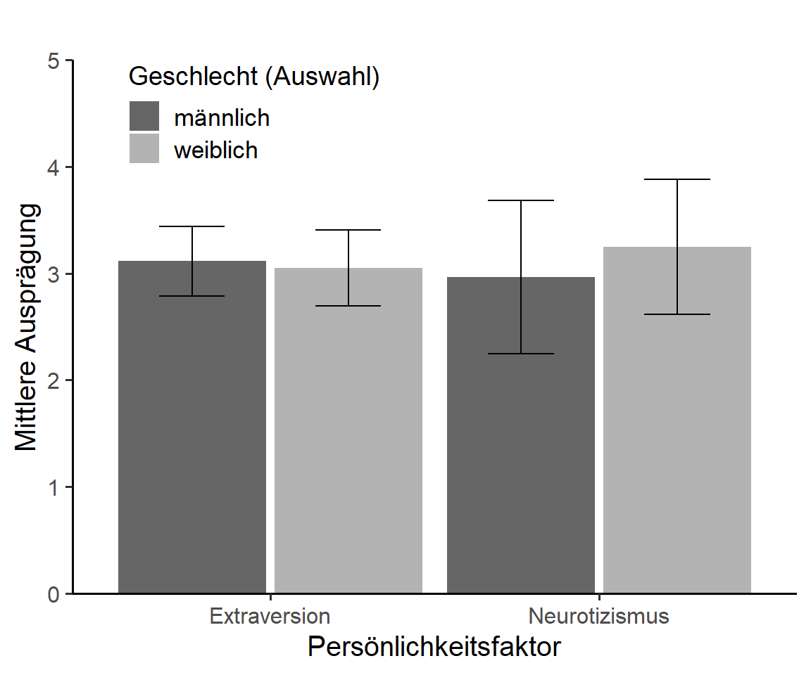

Kapitel 8 Visualisierungen
8.1 Einführung
Für die sämtliche Visualisierungen werden wir das ggplot Package aus dem tidyverse verwenden. ggplot steht dabei für grammar of graphics. Genau wie in der Datenvorbereitung geht es also auch hier darum, das zugrundeliegende Prinzip einmal zu verstehen, um es dann auf verschiedenste Abbildungstypen anzuwenden. Wir werden wie bei der deskriptiven Statistik (siehe Kapitel 7) auch hier mit der leicht modifizierten Variante des Big Five Datensatzes arbeiten.
big5_mod# A tibble: 200 x 6
Alter Geschlecht Extraversion Neurotizismus Gruppe ID
<dbl> <chr> <dbl> <dbl> <chr> <int>
1 36 m 3 1.9 Mittel 1
2 30 f 3.1 3.4 Jung 2
3 23 m 3.4 2.4 Jung 3
4 54 m 3.3 4.2 Weise 4
# ... with 196 more rowsIn Abbildung 8.1 sind die grundsätzlichen Komponenten links und je ein entsprechendes Beispiel rechts abgebildet. Jeder ggplot besteht aus verschiedenen Layern, die untereinander gelegt werden. Um eine Abbildung zu erstellen, muss man auf jeden Fall Data, Aestetics und Geometries verwenden. Die Layer namens Scales und Theme sind optional und passen lediglich das Erscheinungsbild an. Wir werden uns in Kapitel 8.2 bis 8.10 die jeweiligen Data, Aestetics und Geometries anschauen. Erst in Kapitel 8.13 werden die Anpassungsmöglichkeiten mithilfe der Scales und Theme Layer umfangreich eingeführt.

Abbildung 8.1: Vereinfachte Anordnung der Layer im Rahmen der Grammar of Graphics mit Beispielen.
Es ist wichtig zu verstehen, dass die Layer untereinander gelegt werden und man am Ende von unten auf die kreierte Abbildung schaut. Wenn man beispielsweise mehrere Geometries hintereinander in einen Plot einbaut, kann der zuletzt hinzugefügte den zuvor hinzugefügten (teilweise) überdecken. Bleiben wir bei dem Beispiel der Erstellung eines Histogramms aus Abbildung 8.1.
ggplot(data = big5_mod, mapping = aes(x = Extraversion)) +
geom_histogram() Innerhalb der Funktion ggplot() wird dem data Argument der Datensatz big5_mod übergeben. Aus diesem Datensatz möchten wir die Spalte Extraversion auf der x-Achse abgebildet haben. Die ersten beiden Layer sind somit bereits implementiert. Der Aestetics Layer wird durch das mapping Argument hinzugefügt. Allerdings können wir die Spalte nicht einfach mit x = Extraversion hinzufügen, sondern benötigen die zusätzliche Funktion aes(), der wir unsere Spalte übergeben. Dabei steht aes() für aesthetics (engl. für Ästhetik). Neben der Spalte, die auf der x-Achse abgebildet werden soll, kann auf die selbe Art und Weise die y-Achse definiert werden. Auch Argumente zur Veränderung des Aussehens wie color (Außenfarbe) oder fill (Füllfarbe) können hier innerhalb von aes() der Funktion ggplot übergeben werden.
Nun haben wir oben bereits gesehen, dass das Histogramm erst mit der Funktion geom_histogram() hinzugefügt wird. Das Präfix geom ist dabei für jeden Geometry Layer der selbe. Für ein einfaches Histogramm muss an dieser Stelle nichts weiteres getan werden. Wichtig ist an dieser Stelle noch das +, welches sämtliche Layer zusammenbindet und untereinander hinzufügt. Anders als in Kapitel 6 wird hier also nicht die Pipe (%>%), sondern ein Plus-Zeichen verwendet.
Anders als sonst können Funktionen aus ggplot2 nicht mit einer Pipe aneinander gebunden werden. Das hat ausschließlich historische Gründe, da zu der Zeit der Erstellung von ggplot2 die Pipe noch nicht existiert hat. Dies wird sich in Zukunft auch nicht mehr ändern.
Schauen wir uns die einzelnen Befehle einmal genauer an. Die erste Zeile kreiert erst einmal nur den Plot an sich und kein Histogramm. Die beiden Argumente data und mapping schreiben wir von nun an nicht mehr extra dazu, da wir die Reihenfolge dieser Argumente im Verlaufe des Buches ändern.
ggplot(big5_mod, aes(x = Extraversion)) 
Wie zuvor kurz erwähnt, beginnt die Funktion zur eigentlichen Visualisierung der Daten mit geom_ und endet mit dem Namen der Abbildungsart (hier Histogramm).
ggplot(big5_mod, aes(x = Extraversion)) +
geom_histogram() 
Das standardmäßige Aussehen mit dem grauen Hintergrund ist ein ggplot in der Form nicht publikationsreif. In Kapitel 8.13 werden diverse Anpassungsmöglichkeiten dieses flexiblen und sehr umfangreichen Packages erläutert werden. Zuvor werden wir allerdings erst einmal die üblichsten Abbildungsarten nacheinander Schritt für Schritt durchgehen.
8.2 Histogramm und Dichte
Das Histogramm wurde exemplarisch bereits in der Einführung beschrieben. Wir erinnern uns, in dem Fall bedarf es nur der Zuweisung der Variable für die x-Achse, da auf der y-Achse die Häufigkeitsverteilung dargestellt wird.
ggplot(big5_mod, aes(x = Extraversion)) +
geom_histogram() Für ein schlichteres Aussehen fügen wir in Abbildung 8.2 (b) noch eine schwarze Rahmenfarbe mit dem color Argument und eine weiße Füllungsfarbe mit fill hinzu. Histogramme sind maßgeblich von der gewählten Breite der Balken abhängig. Bei zu wenigen Balken können Informationen der Verteilung verloren gehen, bei zu vielen hingegen irrelevante Trends erscheinen. Dieses kann entweder direkt mit der Anzahl der Balken (bins Argument) oder mit der Breite (binwidth Argument) verändert werden. Wir werden hier binwidth verwenden, da man dieser auch eine Funktion übergeben kann.
ggplot(big5_mod, aes(x = Extraversion)) +
geom_histogram(
color = "black",
fill = "white",
binwidth = 0.2
)
Abbildung 8.2: Histogramme
Es gibt verschiedene Arten, eine möglichst optimale binwidth herauszufinden. Exemplarisch sei hier die Freedman-Diaconis Regel gezeigt. Wie bereits in Kapitel 6.5 eingeführt, erstellen wir dafür eine Funktion namens opt_bin().
opt_bin <- function(x) {
(max(x) - min(x)) / nclass.FD(x)
}Diese neu erstellte Funktion muss man erst einmal speichern, in dem man den obigen Befehl ausführt. Nun können wir opt_bin direkt in geom_histogram() einfügen (siehe Abbildung 8.3 (a)).
ggplot(big5_mod, aes(x = Extraversion)) +
geom_histogram(
color = "black",
fill = "white",
binwidth = opt_bin
)Eine weitere Möglichkeit, die Verteilung der Extraversion in unserer Population darzustellen, ist die Wahrscheinlichkeitsdichte. Dazu müssen wir lediglich den Suffix des Geometry Layers zu density (engl. für Dichte) verändern (siehe Abbildung 8.3 (b)).
ggplot(big5_mod, aes(x = Extraversion)) +
geom_density()Möchten wir nun das Histogramm gemeinsam mit der Wahrscheinlichkeitsdichte abbilden, müssen wir erst einmal beide auf die selbe Skala bringen. Hier möchten wir exemplarisch die Häufigkeiten des Histogramms ebenfalls als Dichte ausgedrückt haben. Dafür bedarf es eines kleinen Tricks. Dazu muss der Histogrammfunktion ebenfalls mit aes() ein Wert für die y-Achse übergeben werden. Mit ..density.. wird die Dichte berechnet. Die beiden Punkte vor und hinter der Dichte signalisieren der Funktion, dass etwas berechnet werden soll. Anschließend muss lediglich mit einem weiteren Plus-Zeichen die Dichtefunktion hinzugefügt werden. Für eine ansprechendere optische Darstellung fügen wir noch eine graue Füllfarbe hinzu und machen diese mit alpha leicht durchsichtig. Das Ergebnis kann in Abbildung 8.3 (c) betrachtet werden.
ggplot(big5_mod, aes(x = Extraversion)) +
geom_histogram(
mapping = aes(y = ..density..),
binwidth = 0.2,
color = "black",
fill = "white"
) +
geom_density(
fill = "grey",
alpha = 0.7
)
Abbildung 8.3: Histogramm und Dichte
Das ist ein Platzhalter für eine Übung. Starte die Übung mit hands_on("test").
8.3 Streudiagramm
Um ein Streudiagramm zu erstellen, müssen wir neben der x-Achse nun ebenfalls die y-Achse festlegen. Ansonsten ändert sich nur der Geometry Layer zu geom_point(). Exemplarisch sei hier die mittlere Extraversion gegen das Lebensalter aufgetragen (siehe Abbildung 8.4 (a)). Auf weitere Parameter wie das Ändern der Farbe (color) oder Form (shape) verzichten wir an dieser Stelle.
ggplot(big5_mod, aes(x = Extraversion, y = Alter)) +
geom_point()Nun sieht dieses Streudiagramm etwas seltsam aus, weil die zugrunde liegenden Daten ordinal und nicht metrisch skaliert waren. Die Extraversion wurde mit einem Fragebogen ermittelt und daraus dann der Mittelwert gebildet. Dadurch ist natürlich kein richtiges metrisches Skalenniveau gegeben, weswegen die Punkte hier in Reih und Glied erscheinen. Bei größeren Datensätzen kann es passieren, dass die Punkte sich in einem derartigen Szenario überlappen. Um das zu verhindern, kann die Position zu jitter verändert werden. Dies bewirkt eine leichte zufällige Variation jedes Datenpunktes (siehe Abbildung 8.4 (b)).
ggplot(big5_mod, aes(x = Extraversion, y = Alter)) +
geom_point(position = "jitter")Mit geom_smooth() kann man eine am besten passende Linie durch die Punkte ziehen. Wir entscheiden uns an der Stelle für eine lineare Regressionsgrade (method = lm). Für alternative Methoden sei auf die Dokumentation der Funktion verwiesen. Außerdem färben wir die Grade schwarz und fügen ein 95% Konfidenzintervall mit se = TRUE hinzu. Damit der Regressionsgrade nicht nur in dem Bereich, in dem Daten beobachtet wurden, abgebildet wird, kann zusätzlich das fullrange Argument auf TRUE gesetzt werden. Um den Effekt dieser Funktion zu illustrieren, greifen wir an dieser Stelle etwas voraus und definieren mit xlim(c(2, 5)) die untere Grenze der x-Achse mit 2 und die obere mit 5 (siehe Abbildung 8.4 (c)).
ggplot(big5_mod, aes(x = Extraversion, y = Alter)) +
geom_point(position = "jitter") +
geom_smooth(
color = "black",
method = lm,
se = TRUE,
fullrange = TRUE
) +
xlim(c(2, 5)) 
Abbildung 8.4: Streudiagramm und Regressionsgrade
Das ist ein Platzhalter für eine Übung. Starte die Übung mit hands_on("test").
8.4 Boxplot
Würde man nur einen Boxplot für die mittlere Ausprägung von Extraversion erstellen wollen, könnte man dies genau wie in den beiden zuvor besprochenen Kapiteln nur durch das Auswechseln des Geomitry Layers mit geom_boxplot() erreichen. Dies ist allerdings eine seltene Situation. Meistens möchte man auf der x-Achse mehrere Variablen miteinander vergleichen. Wir möchten an dieser Stelle zum Beispiel Extraversion und Neurotizismus miteinander vergleichen. Um dies zu erreichen, müssen wir den Datensatz vom breiten ins lange Datenformat transformieren. Wenn Dir das lange Datenformat kein Begriff ist, schaue Dir noch einmal das Kapitel 6.7 genauer an. Dort wird die hier verwendete Funktion pivot_longer() ausführlich eingeführt.
big5_long <- big5_mod %>%
pivot_longer(
cols = Extraversion:Neurotizismus,
names_to = "Faktor",
values_to = "Auspraegung"
)
big5_long# A tibble: 400 x 6
Alter Geschlecht Gruppe ID Faktor Auspraegung
<dbl> <chr> <chr> <int> <chr> <dbl>
1 36 m Mittel 1 Extraversion 3
2 36 m Mittel 1 Neurotizismus 1.9
3 30 f Jung 2 Extraversion 3.1
4 30 f Jung 2 Neurotizismus 3.4
# ... with 396 more rowsNun sind unsere Persönlichkeitsfaktoren in der Spalte Faktor und die Werte aus den Spalten in Auspraegung. Einen Boxplot erstellt man mit geom_boxplot(). Auf der x-Achse möchten wir die Persönlichkeitsfaktoren und auf der y-Achse die mittleren Ausprägungen darstellen (siehe Abbildung 8.5 (a)).
ggplot(big5_long, aes(x = Faktor, y = Auspraegung)) +
geom_boxplot()Um zusätzlich Fehlerbalken zu erhalten müssen wir diese mit stat_boxplot() berechnen und ausgeben lassen. Als Argument muss das geom Argument auf "errorbar" (engl. für Fehlerbalken) gesetzt werden. Die Breite des Fehlerbalkens kann durch das optionale Argument width kontrolliert werden. Zum Ausblenden der Ausreißer setzt man innerhalb von geom_boxplot() die outlier.shape auf NA (Akronym für Not Available). Das Ergebnis ist in Abbildung 8.5 (b) illustriert.
ggplot(big5_long, aes(x = Faktor, y = Auspraegung)) +
stat_boxplot(geom = "errorbar", width = 0.4) +
geom_boxplot(outlier.shape = NA) 
Abbildung 8.5: Boxplots
Wichtig ist dabei die Reihenfolge der Funktionsaufrufe. Wie bereits erwähnt, werden die verschiedenen Layer untereinander gezeichnet. Würden wir also zunächst geom_boxplot() und erst anschließend stat_boxplot() zum ggplot hinzufügen, würde die Linie des Fehlerbalkens über den Boxplot gezeichnet werden.
Das ist ein Platzhalter für eine Übung. Starte die Übung mit hands_on("test").
8.5 Violin Plot
Für die Violin Plots nutzen wir, genau wie zuvor bei den Boxplots (siehe Kapitel 8.4), den Datensatz im langen Datenformat. Dieser heißt big5_long und wurde mithilfe von pivot_longer() erstellt. Es ändert sich nichts außer das Geometry Layer, welches nun geom_violin() heißt (siehe Abbildung 8.6 (a)).
ggplot(big5_long, aes(x = Faktor, y = Auspraegung)) +
geom_violin()Optional kann zusätzlich das Argument trim auf FALSE gesetzt werden, um das Abschneiden der Enden des Violin Plots zu verhindern. Mit dem Argument können wir explizit Quantile (hier 25%, 50%, 75% ) einzeichnen lassen. Das Ergebnis ist in Abbildung 8.6 (b) zu sehen.
ggplot(big5_long, aes(x = Faktor, y = Auspraegung)) +
geom_violin(
trim = FALSE,
draw_quantiles = c(0.25, 0.5, 0.75)
)
Abbildung 8.6: Violin Plots
Das ist ein Platzhalter für eine Übung. Starte die Übung mit hands_on("test").
8.6 Balkendiagramm
Bei Balkendiagrammen möchte man in der Regel mehrere Merkmale miteinander vergleichen. Deswegen müssen wir, genau wie auch bereits bei den Boxplots und Violin Plots, den Datensatz erst in ein langes Format bringen. In Kapitel 6.7 wird erläutert, wie das im Detail funktioniert.
big5_long <- big5_mod %>%
pivot_longer(
cols = Extraversion:Neurotizismus,
names_to = "Faktor",
values_to = "Auspraegung"
)Nun möchte man in Balkendiagrammen häufig Mittelwerte oder andere konkrete Einzelwerte miteinander vergleichen. Deswegen müssen wir vor der graphischen Darstellung erst die Mittelwerte berechnen. Zusätzlich berechnen wir die Standardabweichung zur späteren Erstellung der Fehlerbalken. Wie das funktioniert, wurde bereits in Kapitel 7 eingeführt.
big5_means <- big5_long %>%
group_by(Faktor) %>%
summarise(
Mean = mean(Auspraegung, na.rm = TRUE),
SD = sd(Auspraegung, na.rm = TRUE)
)
big5_means# A tibble: 2 x 3
Faktor Mean SD
* <chr> <dbl> <dbl>
1 Extraversion 3.08 0.347
2 Neurotizismus 3.13 0.682Nun kann man mit der Funktion geom_col() genau diese Mittelwerte abbilden. Auf der x-Achse sind demnach wie zuvor auch die Persönlichkeitsfaktoren und auf der y-Achse die Mittelwerte aufgetragen (siehe Abbildung 8.7 (a)).
ggplot(big5_means, aes(x = Faktor, y = Mean)) +
geom_col() Verwechsle geom_col() nicht mit geom_bar(). Die erste Funktion stellt genau das dar, was man ihr übergibt (z.B. Mittelwerte). Letztere Funktion hingegen erstellt Balken mit einer Höhe, die proportional zur Anzahl der Fälle in der jeder Gruppe ist. Dies findet in der Wissenschaft eher seltener Anwendung, weswegen man wahrscheinlich meist mit geom_col() besser bedient ist.
Um das Balkendiagramm zu verschönern, können wir auch hier die Füllfarbe (fill) und die Rahmenfarbe (color) entsprechend anpassen. Zusätzlich bilden wir mit geom_errorbar() die Standardabweichung (SD) ab, indem wir das Minimum des Fehlerbalken als Mittelwert minus Standardabweichung und das Maximum als Mittelwert plus Standardabweichung festlegen. Außerdem kann die Breite der Fehlerbalken mit width verändert werden. Beachte an dieser Stelle, dass die Grenzen der Fehlerbalken (ymin und ymax) im Gegensatz zur Fehlerbalkenbreite innerhalb der Funktion aes() definiert werden müssen. Das Ergebnis ist in Abbildung 8.7 (b) dargestellt. Mehrfaktorielle Balkendiagramme werden erst in Kapitel 8.11 eingeführt.
ggplot(big5_means, aes(x = Faktor, y = Mean)) +
geom_col(fill = "white", color = "black") +
geom_errorbar(aes(ymin = Mean - SD,
ymax = Mean + SD), width = 0.4)
Abbildung 8.7: Balkendiagramme
Das ist ein Platzhalter für eine Übung. Starte die Übung mit hands_on("test").
8.7 Liniendiagramm
Bei Mittelwertvergleichen in Form von Liniendiagrammen ändert sich im Vergleich zu den Balkendiagrammen nur wenig. Auch hier verwenden wir wieder den Datensatz big5_means, der unsere Mittelwerte und Standardabweichungen für Extraversion und Neurotizismus enthält. Zum Erstellen der Verbindungslinie zwischen den beiden Persönlichkeitsfaktoren muss das group Argument auf 1 gesetzt werden. Nun müssen wir noch die Linie mit geom_line(), die Mittelwerte als Punkte mit geom_point() und die Fehlerbalken mit geom_errorbar() erstellen. Auch hier ändert sich nichts im Vergleich zu den Balkendiagrammen im vorherigen Kapitel. Das Ergebnis ist in Abbildung 8.8 (a) illustriert.
ggplot(big5_means, aes(x = Faktor, y = Mean, group = 1)) +
geom_line() +
geom_point() +
geom_errorbar(aes(ymin = Mean - SD,
ymax = Mean + SD), width = 0.2) Ein weiteres klassisches Beispiel eines Liniendiagramms ist die Abbildung von Zeitreihen. Dafür schauen wir uns den Kurs der Bitcoin Aktie an, welcher im remp Package enthalten ist.
bitcoin# A tibble: 731 x 2
Date Price
<date> <dbl>
1 2019-01-01 3844.
2 2019-01-02 3943.
3 2019-01-03 3837.
4 2019-01-04 3858.
# ... with 727 more rowsAuf der x-Achse soll das Datum stehen und auf der y-Achse der Preis bei geschlossener Börse in USD. Die Zeitreihe wird wie zuvor mit geom_line() visualisiert. Wichtig ist hierbei, dass das Datum vom Datentyp date ist (siehe Kapitel 6.12). Zusätzlich können wir, wie beim Streudiagramm in Kapitel 8.3, mit stat_smooth() eine am besten passendste Kurve zur Kursbeschreibung hinzufügen. Abschließend greifen wir an dieser Stelle etwas vor und verändern noch die Benennung der x-Achse mithilfe von scale_x_date(). Dabei gibt es verschiedene Möglichkeiten der Anzeige, die jeweils mit einem Prozentzeichen angeführt werden müssen. Hier zeigen wir den abgekürzten Monatsnamen (%b) und das entsprechende Jahr (%Y). Das Ergebnis ist in Abbildung 8.8 (b) illustriert.
ggplot(bitcoin, aes(x = Date, y = Price)) +
geom_line() +
stat_smooth(color = "black") +
scale_x_date(date_labels = "%b %Y")Eine weitere Anwendung finden Liniendiagramme bei Scree Plots zur Auswahl der Anzahl der Faktoren für explorative Faktorenanalysen (siehe Kapitel 10.2). Dafür benötigen wir den kompletten Big Five Rohdatensatz mit den einzelnen Fragen zu den Persönlichkeitsfaktoren namens big_five_comp. Mit der im remp enthaltenen Funktion data_eigen() können praktisch die entsprechenden Eigenvalues berechnet werden, die wir im Scree Plot abbilden wollen.
big5_scree <- big_five_comp %>%
select(-Geschlecht) %>%
data_eigen()
big5_scree# A tibble: 51 x 2
Eigenvalues Dimension
<dbl> <int>
1 8.25 1
2 4.59 2
3 3.62 3
4 3.57 4
# ... with 47 more rowsEs ändert sich im Prinzip nichts im Vergleich zum vorherigen Beispiel. Auf der x-Achse haben wir unsere verschiedenen Dimensionen und auf der y-Achse die Eigenvalues. geom_point() und geom_line() modifizieren wir selbsterklärend zusätzlich optisch leicht. Neu ist an dieser Stelle die Funktion geom_hline() (für horizontal line), welche eine horizontale Linie beim Schnittpunkt mit der y-Achse von 1 einzeichnet (siehe Abbildung 8.8 (b)).
ggplot(big5_scree, aes(x = Dimension, y = Eigenvalues)) +
geom_point(shape = 19, size = 2) +
geom_line(size = 0.6) +
geom_hline(
aes(yintercept = 1),
size = 0.8,
linetype = "longdash"
) 
Abbildung 8.8: Abbildung von Liniendiagrammen als (a) Mittelwertsvergleich (b) Zeitreihe und (c) Scree Plot
Das ist ein Platzhalter für eine Übung. Starte die Übung mit hands_on("test").
8.8 Odds Ratios
Der Datensatz odds_ratios ist im remp Package enthalten. Es wurde überprüft, ob es einen Unterschied in der Häufigkeit höher ausgeprägter Persönlichkeitsfaktoren zwischen den Geschlechtern gibt. Wie man selbst einen derartigen Datensatz erstellen kann, wird in Kapitel 9.8.1 im Rahmen des Fisher-Exakt Tests eingeführt.
odds_ratios# A tibble: 3 x 4
Faktor OR conf.low conf.high
<chr> <dbl> <dbl> <dbl>
1 Extraversion 1.15 0.628 2.11
2 Neurotizismus 0.448 0.241 0.824
3 Vertraeglichkeit 0.962 0.499 1.87 Jetzt ändert sich eine entscheidende Sache im Vergleich zu den Abbildungen zuvor. Unsere diskrete Variable der Persönlichkeitsfaktoren mit den Merkmalsausprägungen Extraversion, Neurotizismus und Vertraeglichkeit wird nach Konvention bei der Illustration von Odds Ratios (OR) auf der y-Achse abgebildet. Wir vertauschen als das x und y Argument innerhalb von aes() im Mapping Layer. Dadurch ändert sich auch die Funktion für die Fehlerbalken zu geom_errorbarh() (horizontal). Auch möchten wir zusätzlich mit geom_vline() eine vertikale Linie bei OR = 1 darstellen. Beachte hier die geänderten Argumente xmin, xmax und xintercept im Vergleich zu den bereits kennengelernten Äquivalenten der y-Achse. Das Ergebnis ist in Abbildung 8.9 abgebildet.
ggplot(odds_ratios, aes(x = OR, y = Faktor)) +
geom_point() +
geom_errorbarh(aes(xmin = conf.low,
xmax = conf.high), height = 0.1) +
geom_vline(xintercept = 1) Abbildung 8.9: Odds Ratios
Die beiden Achsen einfach innerhalb von aes() zu vertauschen, ist erst seit ggplot 3.3.0 möglich. Vorher musste man ein normales Liniendiagramm erstellen und dieses mit coord_flip() zum Schluss umdrehen. Achte also darauf, eine aktuelle Version des Packages installiert zu haben.
Das ist ein Platzhalter für eine Übung. Starte die Übung mit hands_on("test").
8.9 Q-Q Plot
Um mithilfe eines Q-Q Plots die Quantile zweier Verteilungen zu überprüfen, können wir geom_qq() und geom_qq_line() verwenden. Ein häufiger Anwendungsfall ist die graphische Überprüfung einer Variable auf Normalverteilung. Daher ist dies auch die Standardeinstellung innerhalb der Funktionen. Die interessierende Variable (hier Alter) muss dem sample Argument übergeben werden (siehe Abbildung 8.10).
ggplot(big5_mod, aes(sample = Alter)) +
geom_qq() +
geom_qq_line()
Abbildung 8.10: Q-Q Plots
Möchte man die Verteilung einer Spalte mit einer anderen Verteilung vergleichen, können mit dem distribution Argument die Quantile einer anderen Verteilung wie qbinom (Binomialverteilung) oder qt (t-Verteilung) ohne Anführungszeichen festgelegt werden.
Das ist ein Platzhalter für eine Übung. Starte die Übung mit hands_on("test").
8.10 Ellipse
Das Zeichnen von Ellipsen kann beispielsweise für das Visualisieren mehrerer Cluster (siehe Kapitel 10.3) praktisch sein. An dieser Stelle tragen wir jedoch nur Extraversion und Alter gegeneinander auf. Neu ist die Funktion stat_ellipse(). Das Präfix stat steht für statistical transformation und ist hinter den Kulissen die Basis für alle die bisher gelernten Funktionen. Für alle häufiger verwendeten Funktionen wurde allerdings zusätzlich eine geom_*() Funktion geschrieben, die sich zumeist nur durch die Wahl von für die meisten sinnvollen Standardwerten ausmacht. Ansonsten besteht zwischen stat und geom Funktion kein bedeutender Unterschied. Die Ellipse ist in Abbildung 8.11 illustriert.
ggplot(big5_mod, aes(x = Extraversion, y = Alter)) +
geom_point(position = "jitter") +
stat_ellipse()
Abbildung 8.11: Ellipse
Das ist ein Platzhalter für eine Übung. Starte die Übung mit hands_on("test").
8.11 Mehrfaktorielle Abbildungen
In den bisherigen Kapiteln haben wir bislang nur einfaktorielle Abbildungen besprochen. Wir haben also einfach eine Variable auf der x-Achse gegen eine Variable auf der y-Achse aufgetragen. Was aber, wenn man nach mehreren Faktoren gruppieren möchte? Zum Beispiel könnte man die Farbe der Balkendiagramme je nach Geschlecht verändern. Da wir nun mehr als einen Faktor haben, sprechen wir von zweifaktoriell. Die Anzahl der Ausprägungsgrade, also ob zwei oder fünf Geschlechter erhoben hat, spielt dabei keine Rolle. Diese zweifaktoriellen Abbildungen können mit selbsterklärenden Gruppierungselementen wie color, fill und linetype implementiert werden. Wenn man drei- oder vierfaktorielle Abbildungen kreieren möchte, muss man auf Facets zurückgreifen.
Im Sinne der Barrierefreiheit bezüglich Farbenblindheit, stellen wir die Standardfarben auf die Viridis Farbenpalette um, die genau für diesen Zweck kreiert wurden. Der Suffix d steht für discrete und c für continouus. Diese vier Befehle stellen global (also für die gesamte R Session) die Standardfarben um.
scale_fill_discrete <- scale_fill_viridis_d
scale_fill_continuous <- scale_fill_viridis_c
scale_colour_discrete <- scale_color_viridis_d
scale_colour_continuous <- scale_color_viridis_cDabei handelt es sich um dieselbe Farbpalette wie in diesem Buch. Weitere Informationen über die Anpassung der Farbpaletten finden sich in Kapitel 8.13.
8.11.1 Gruppierungsargumente
Gruppierungsargumente können grundsätzlich erst einmal fast alles innerhalb von aes() sein. Je nach gewünschter Abbildung kann color, fill, linetype aber auch size und shape beispielsweise verwendet werden. Im Vergleich zu vorher übergeben wir diesen Argumenten nun kein Charakter (wie "black"), sondern das gruppierende Argument (z.B. Geschlecht). Zusätzlich benötigen wir dann nur noch ein position Argument, welches spezifiziert, wie die Gruppen zueinander stehen. Eine häufige Wahl hierfür ist die Funktion position_dodge(0.95) (engl. für ausweichen), welches die Gruppen direkt nebeneinander darstellt. Die Zahl in der Klammer steht für den genauen Abstand zwischen den Balken oder Linien (je nach Funktion).
Alternativ könnte man auch position = "stack" für eine aufeinander gestapelte Ansicht pro Kategorie verwenden. Wenn man stattdessen position = "fill" verwendet, werden diese übereinander gestapelten Anteile auf 1 standardisiert, sodass man die Verhältnisse besser vergleichen kann.
Beim Erstellen eines gruppierten Balkendiagramms, müssen wir nun nur noch den Datensatz mit einem zusätzlichen Faktor (hier Geschlecht) mit group_by() gruppieren.
big5_means2 <- big5_long %>%
group_by(Faktor, Geschlecht) %>%
summarise(
Mean = mean(Auspraegung, na.rm = TRUE),
SD = sd(Auspraegung, na.rm = TRUE)
)
big5_means2# A tibble: 4 x 4
# Groups: Faktor [2]
Faktor Geschlecht Mean SD
<chr> <chr> <dbl> <dbl>
1 Extraversion f 3.05 0.358
2 Extraversion m 3.11 0.328
3 Neurotizismus f 3.25 0.633
4 Neurotizismus m 2.96 0.718Jetzt setzen wir noch fill = Geschlecht für die Füllfarbe und fügen entsprechend wie bereits besprochen die Positionsargumente jeder Funktion hinzu (siehe Abbildung 8.12).
ggplot(big5_means2, aes(x = Faktor,
y = Mean,
fill = Geschlecht)) +
geom_col(position = position_dodge(0.95)) +
geom_errorbar(
aes(ymin = Mean - SD,
ymax = Mean + SD),
width = 0.4,
position = position_dodge(0.95)
) Abbildung 8.12: Zweifaktorielle Balkendiagramme
Ein anderes Beispiel wären gruppierte Liniendiagramme. Grundsätzlich ändern wir an dieser Stelle nur fill zu linetype und müssen zusätzlich das Gruppenargument Geschlecht den einzelnen Funktionen übergeben, da sonst keine Linien zwischen den Gruppen gezeichnet werden würden (siehe Abbildung 8.13).
ggplot(big5_means2, aes(x = Faktor,
y = Mean,
linetype = Geschlecht)) +
geom_line(
aes(group = Geschlecht),
position = position_dodge(0.2)
) +
geom_point(position = position_dodge(0.2)) +
geom_errorbar(
aes(group = Geschlecht,
ymin = Mean - SD,
ymax = Mean + SD),
width = 0.2,
position = position_dodge(0.2)
) 
Abbildung 8.13: Zweifaktorielle Liniendiagramme
Das ist ein Platzhalter für eine Übung. Starte die Übung mit hands_on("test").
8.11.2 Facets
Bei dreifaktoriellen Abbildungen müssen wir erst einmal einen weiteren Faktor (hier Gruppe) der Funktion group_by() übergeben.
big5_means3 <- big5_long %>%
group_by(Faktor, Geschlecht, Gruppe) %>%
summarise(
Mean = mean(Auspraegung, na.rm = TRUE),
SD = sd(Auspraegung, na.rm = TRUE)
)
big5_means3# A tibble: 12 x 5
# Groups: Faktor, Geschlecht [4]
Faktor Geschlecht Gruppe Mean SD
<chr> <chr> <chr> <dbl> <dbl>
1 Extraversion f Jung 3.07 0.373
2 Extraversion f Mittel 3.07 0.299
3 Extraversion f Weise 2.83 0.269
4 Extraversion m Jung 3.12 0.324
# ... with 8 more rowsZum Darstellen unsere drei Altersgruppen können wir nun mit facet_wrap() auswählen, ob die Gruppen zeilenweise (facet_wrap(Gruppe ~)) oder wie in dem Beispiel spaltenweise (facet_wrap(~ Gruppe)) dargestellt werden sollen (siehe Abbildung 8.14).
ggplot(big5_means3, aes(x = Faktor,
y = Mean,
fill = Geschlecht)) +
geom_col(position = position_dodge(0.95)) +
geom_errorbar(
aes(ymin = Mean - SD,
ymax = Mean + SD),
width = 0.4,
position = position_dodge(0.95)
) +
facet_wrap(~ Gruppe) Abbildung 8.14: Dreifaktorielle Abbildung.
Das Prinzip bleibt auch bei vierfaktoriellen Abbildungen das gleiche. Wir erfinden dafür noch eine zusätzliche Spalte mit zwei Messzeitpunkten. Die Funktion rep() (repeat, engl. für wiederholen) wiederholt dabei die beiden Messzeitpunkte T1 und T2 jeweils 200 mal, da wir 400 Zeilen in unserem Datensatz haben. Das ist natürlich in der Praxis nicht notwendig, wenn wir bereits eine Spalte haben, nach der wir zusätzlich gruppieren möchten. Ansonsten fügen wir wie zuvor diesen weiteren Faktor zu group_by() hinzu.
big5_means4 <- big5_long %>%
mutate(Zeitpunkt = rep(c("T1", "T2"), each = 200)) %>%
group_by(Faktor, Geschlecht,
Gruppe, Zeitpunkt) %>%
summarise(
Mean = mean(Auspraegung, na.rm = TRUE),
SD = sd(Auspraegung, na.rm = TRUE)
)
big5_means4# A tibble: 24 x 6
# Groups: Faktor, Geschlecht, Gruppe [12]
Faktor Geschlecht Gruppe Zeitpunkt Mean SD
<chr> <chr> <chr> <chr> <dbl> <dbl>
1 Extraversion f Jung T1 3.08 0.391
2 Extraversion f Jung T2 3.06 0.362
3 Extraversion f Mittel T1 2.93 0.121
4 Extraversion f Mittel T2 3.13 0.336
# ... with 20 more rowsAnschließend müssen wir nur noch facet_wrap() zu facet_grid() tauschen, da letztere Funktion sowohl zeilenweise (links der Tilde) als auch spaltenweise (rechts der Tilde) zeitgleich gruppieren kann (siehe Abbildung 8.15).
ggplot(big5_means4, aes(x = Faktor,
y = Mean,
fill = Geschlecht)) +
geom_col(position = position_dodge(0.95)) +
geom_errorbar(
aes(ymin = Mean - SD,
ymax = Mean + SD),
width = 0.4,
position = position_dodge(0.95)
) +
facet_grid(Zeitpunkt ~ Gruppe) Abbildung 8.15: Vierfaktorielle Abbildungen
Das ist ein Platzhalter für eine Übung. Starte die Übung mit hands_on("test").
8.12 Anordnen mehrerer Graphen
Nicht selten möchte man mehrere Graphen innerhalb einer Abbildung darstellen, die optimalerweise auch noch beschriftet sind. Dafür verwenden wir das Package patchwork.
library(patchwork)Zuerst müssen wir die Abbildungen in Variablen abspeichern. Exemplarisch nutzen wir an dieser Stelle das Histogramm, das Streudiagramm, das Balkendiagramm und die Q-Q Plots aus den vorherigen Kapiteln und speichern diese jeweils als a, b, c und d.
a <- ggplot(big5_mod, aes(x = Extraversion)) +
geom_histogram(
color = "black",
fill = "white",
binwidth = 0.2
)
b <- ggplot(big5_mod, aes(x = Extraversion, y = Alter)) +
geom_point(position = "jitter")
c <- ggplot(big5_means, aes(x = Faktor, y = Mean)) +
geom_col(fill = "white", color = "black") +
geom_errorbar(aes(ymin = Mean - SD,
ymax = Mean + SD), width = 0.4)
d <- ggplot(big5_mod, aes(sample = Alter)) +
geom_qq() +
geom_qq_line()Nun müssen wir die verschiedenen Graphen lediglich in der gewünschten Reihenfolge addieren. Die Funktion plot_layout() spezifiziert unter anderem die Anzahl der Spalten (ncol) und plot_annotation() ergänzt mit dem tag_levels Argument Beschriftungen zu jeder Abbildung (siehe Abbildung 8.16).
a + b + c + d +
plot_layout(ncol = 2) +
plot_annotation(tag_levels = "A")
Abbildung 8.16: Anordnung mehrerer Graphen
Neben "A" kann der Funktion plot_annotation() außerdem "i", "I", "a" und "1" übergeben werden. Die tag_levels können durch tag_prefix und tag_suffix weiter an die eigenen Bedürfnisse angepasst werden. Außerdem können Abbildungen auch in unterschiedlicher Anzahl neben- und untereinander gesetzt werden. Dafür muss man lediglich die oben stehenden Abbildungen mit vertikalen Linien unterteilen und diese dann durch die Abbildung, die unten stehen soll, teilen (siehe Abbildung 8.17).
(a | b | c) / d +
plot_annotation(
tag_levels = "I",
tag_prefix = 'Abb. ',
tag_suffix = ':'
)
Abbildung 8.17: Alternative Anordnung mehrerer Graphen
Für ein komplexeres Beispiel mit verschiedenen Verhältnissen zwischen den Abbildungen sei auf das Kapitel 8.15 verwiesen.
8.13 Anpassen des Aussehens
Wir werden uns anhand der Abbildung aus Kapitel 8.11.1 die verschiedenen Anpassungsmöglichkeiten anschauen.
big5_means2 <- big5_long %>%
group_by(Faktor, Geschlecht) %>%
summarise(
Mean = mean(Auspraegung, na.rm = TRUE),
SD = sd(Auspraegung, na.rm = TRUE)
)Bleiben wir zunächst beim Datensatz. Wenn wir die Bezeichnungen innerhalb unserer Legende (also der Spalte Geschlecht) umbenennen wollen, nutzen wir fct_recode(). Zum Verändern der Reihenfolge kann fct_relevel() verwendet werden. Die Funktionen zur Veränderungen von Faktoren wurden bereits in Kapitel 6.11 eingeführt.
big5_means2 <- big5_means2 %>%
mutate(
Geschlecht = fct_recode(
Geschlecht,
"weiblich" = "f",
"männlich" = "m"),
Geschlecht = fct_relevel(Geschlecht, "männlich")
) Nun erstellen wir zunächst die Abbildung und speichern diese als plot. Grundsätzlich könnten wir alle Anpassungen auch einfach mithilfe einer sehr langen Aneinanderkettung von Befehlen erledigen. Der übersichtshalber speichern wir an dieser Stelle Zwischenergebnisse immer wieder ab.
plot <- ggplot(big5_means2, aes(x = Faktor,
y = Mean,
fill = Geschlecht)) +
geom_col(position = position_dodge(0.95)) +
geom_errorbar(
aes(ymin = Mean - SD,
ymax = Mean + SD),
width = 0.4,
position = position_dodge(0.95)
) 
Das Farbschema kann durch verschiedene Farbpaletten adaptiert werden. Häufig sind im wissenschaftlichen Kontext jedoch nur Graustufen erwünscht, welche wir mit scale_fill_grey() erstellen können. Wichtig ist an dieser Stelle das start und end Argument der Farbpalette, da die Grautöne sonst zu dunkel für das Erkennen von Fehlerbalken sind. Hätten wir in unserem ggplot nicht die Füllfarbe (fill), sondern die Rahmenfarbe (color) verändert, würde man entsprechend scale_color_grey() verwenden.
plot <- plot +
scale_fill_grey(start = 0.4, end = 0.7)
Alternativ könnten wir wie in Kapitel 8.11 bereits erwähnt, eine Farbpalette manuell einstellen, die auch bei Farbenblindheit eine Differenzierung der Farben erlaubt. Dafür würde man beispielsweise scale_fill_viridis_d(start = 0.27, end = 0.72, opt = "C") benutzen. Das ist die Farbpalette, die in diesem Buch verwendet wird. Die Option bezieht sich damit auf eine der fünf in Viridis enthaltenen Farbpaletten. Für genaue Informationen über die einzelnen Farbpaletten sei auf die offizielle Dokumentation verwiesen.
Auch der graue Standardhintergrund und die fehlende Visualisierung der Achsen ist in der Regel in der Wissenschaft nicht erwünscht. Ein gutes minimales Thema ist theme_classic(), welchem wir die grundlegende Größe aller Textelemente übergeben können.
plot <- plot +
theme_classic(base_size = 15)
Genauere Anpassungen des Themas sind mit der theme Funktion möglich. Hier können wir jedes kleinste Detail manuell anpassen. Hervorzuheben ist an dieser Stelle die zwingende Notwendigkeit der element_text() Funktion, der die Argumente wie size übergeben werden müssen. Nützlich ist bei langen Achsenbeschriftungen auch angle (engl. für Winkel) in Kombination mit hjust (Akronym für horizontal adjustment). Strip steht für die Überschriften bei den Facets für mehrfaktorielle Abbildungen (siehe Kapitel 8.11.2). Mithilfe von element_blanck() könnte man den Hintergrund der Überschriftsboxen entfernen. Mit legend.position kann man die Koordinaten der Legende festlegen, mit legend.direction die Ausrichtung. Wenn man letzteres Argument weglässt, wird die Legende vertikal ausgegeben.
plot +
theme(
axis.title = element_text(size = 15),
axis.text.x = element_text(
angle = 45,
hjust = 1,
size = 12
),
axis.text.y = element_text(size = 12),
strip.background = element_blank(),
strip.text = element_text(size = 15),
legend.title = element_text(size = 14),
legend.text = element_text(size = 13),
legend.position = c(0.2, 0.9),
legend.direction = "horizontal"
)Nun kommen wir im nächsten Schritt zu den Achsen. Mit dem expand Argument entfernt man den extra Raum zwischen y-Achse und x-Achse, wodurch die Balken nicht mehr schweben. Mithilfe von labs() (Akronym für labels) kann die Achsen- sowie die Legendbeschriftung angepasst werden. ggtitle() könnte der Abbildung einen Titel hinzufügen. Da dies häufig jedoch nicht erwünscht ist, nutzen wir das an dieser Stelle nur, um einen etwas größeren Platz über der y-Achse zu verschaffen.
plot1 <- plot +
scale_y_continuous(
expand = c(0, 0),
limits = c(0, 5),
breaks = c(0, 1, 2, 3, 4, 5)
) +
labs(
x = "Persönlichkeitsfaktor",
y = "Mittlere Ausprägung",
fill = "Geschlecht (Auswahl)"
) +
ggtitle("")
Alternativ zur Festlegung der Grenzen mit limits innerhalb von scale_y_continouus() könnte man ebenfalls die Funktion lims(), xlims() oder ylims() verwenden. Bei vielen Breaks oder welchen mit ganz bestimmten Abständen könnte man ebenfalls seq() verwenden.
seq(from = 0, to = 4000, by = 500)[1] 0 500 1000 1500 2000 2500 3000 3500 4000Abschließen schauen wir uns noch an, wie man mit sehr langen Achsenbeschriftungen umgehen kann. Mithilfe von guide_axis() können wir beispielswiese festlegen, dass überlappende (check.overlap = TRUE) Achsenbeschriftungen in 2 Zeilen (n.dodge = 2) angezeigt werden.
plot +
scale_x_discrete(guide = guide_axis(
n.dodge = 2,
check.overlap = TRUE)
)Eine andere Möglichkeit besteht darin, lange Achsenbeschriftungen untereinander zu schreiben, wenn sie eine bestimmte Breite (z.B. width = 10) erreichen. Dafür würde man die Funktion str_wrap() aus dem stringr Package verwenden (siehe Kapitel 6.10).
plot +
scale_x_discrete(
labels = function(x) str_wrap(x, width = 10)
)8.14 Speichern von Graphen
Abbildungen werden einfach mit ggsave() in dem aktuellen durch das Projekt festgelegten Ordner gespeichert. Dabei sind vor allem drei Argumente wichtig. Mit filename kannst du festlegen, wie die Abbildung heißen soll und in welchem Dateiformat (z.B. jpg oder png) selbige ausgegeben wird. Wenn man mit plot nichts genaueres festlegt, wird einfach die als letztes kreierte Abbildung gespeichert. Mit width und height legt man die Weite in Inches fest.
ggsave(
filename = "plotA.png",
width = 5,
height = 5
)Wenn man irgendeine Abbildung und nicht unbedingt die Letzte speichern möchte, muss man diesen dem plot Argument übergeben. Die festgelegte Breite und Höhe hat einen erheblich Einfluss auf die Auflösung.
ggsave(
filename = "plotB.png",
plot = plot1,
width = 8,
height = 7
)In Abbildung 8.18 (a) ist plotA.png mit einer Breite und Höhe von 5 Inches abgebildet. In Abbildung 8.18 (b) wurde mit einer Breite von 8 und eine Höhe von 7 die Visualisierung als plotB.png gespeichert. Während in (a) die Achsenbeschriftungen groß sind und die Legende sogar mit der y-Achse überlappt, ist dies in (b) nicht zu beobachten.

Abbildung 8.18: Auflösungsunterschiede je nach Größe der gespeicherten Abbildung.
Die Größe der Abbildung wird durch die Breite (width) und Höhe (height) festgelegt. durch unterschiedliche Größen wird auch die Auflösung innerhalb der Abbildung beeinflusst, sodass man je nachdem zum Beispiel noch die Textgrößen der Achsenbeschriftungen anpassen muss. Die gespeicherte Abbildung hat nicht das selbe Format wie die Ausgabe innerhalb von RStudio und kann dementsprechend davon abweichen.
8.15 Anwendungsbeispiel
Wir werden uns abschließend in diesem Kapitel anhand eines Eye-Tracking Datensatzes namens eye_tracking anschauen, wie wir mithilfe der bisher gelernten Funktionen, eine fortgeschrittene und optische ansprechende Abbildung kreieren können. Diese ist in Abbildung 8.19 illustriert.

Abbildung 8.19: Anzahl fixierter Gesichter in Abhängigkeit beobachteter Einwohner pro Quadratkilometer.
Diese Abbildung besteht im Prinzip aus vier Teilen, welche nacheinander erstellt und dann miteinander kombiniert werden müssen. Wir haben oben links und rechts unten jeweils eine gruppierte Wahrscheinlichkeitsdichte. Links unten ist unsere Hauptabbildung, mit Komponenten, die wir alle bereits kennengelernt haben. Neu hinzu gekommen ist lediglich geom_rug(), welches ebenfalls eine Möglichkeit zu Verteilungsdarstellung darstellt. Die Hauptabbildung wird als plot1 gespeichert.
plot1 <- ggplot(eye_tracking, aes(x = Density,
y = Face_sum,
color = Group)) +
geom_point(aes(color = Group), size = 3) +
geom_point(shape = 1, color = "black", size = 3) +
stat_smooth(method = "lm", fullrange = TRUE) +
geom_rug() +
labs(
x = "Einwohner pro Quadratkilometer",
y = "Anzahl fixierter Gesichter",
color = "Gruppe"
) +
scale_y_continuous(limits = c(0, 205), expand = c(0, 0)) +
scale_x_continuous(limits = c(1, 4), expand = c(0, 0)) +
theme_classic() +
theme(legend.position = c(0.15, 0.9)) Bei den beiden Abbildungen zur Wahrscheinlichkeitsdichte müssen wir zusätzlich das Thema (auch die Achsen) mithilfe von theme_void() vollständig ausblenden. Außerdem entfernen wir die Legende. Gespeichert werden die beiden Ergebnisse als dens1 und dens2.
dens1 <- ggplot(eye_tracking, aes(x = Density,
fill = Group)) +
geom_density(alpha = 0.4) +
theme_void() +
theme(legend.position = "none")
dens2 <- ggplot(eye_tracking, aes(y = Face_sum,
fill = Group)) +
geom_density(alpha = 0.4) +
theme_void() +
theme(legend.position = "none") Jetzt müssen wir die Abbildungen nur noch zusammenfügen. Neu ist an dieser Stelle zum einen die Funktion plot_spacer(), die oben rechts den leeren Raum ausfüllt. Auf der anderen Seite verwenden wir innerhalb von plot_layout() nun die widths und height Argumente, die uns die Spezifizierung der Verhältnisse ermöglicht. Schließlich möchten wir die Wahrscheinlichkeitsdichte oben links und rechts unten kleiner dargestellt haben als unsere Hauptabbildung links unten.
dens1 + plot_spacer() + plot1 + dens2 +
plot_layout(
ncol = 2,
nrow = 2,
widths = c(4, 1),
heights = c(1, 4)
) 8.16 Exemplarische Erweiterungen
Wir erinnern uns, dass die beiden g’s in ggplot für Grammar of Graphics stehen. Daraus resultiert nicht nur eine konsistente Anwendung, wie wir es in den bisherigen Kapiteln kennengelernt haben. Zusätzlich gibt es diverse Erweiterungen, die mal mehr und mal weniger konsistent anzuwenden sind. Alle haben jedoch die gleiche Basis, einen ggplot, gemein. Dadurch können wir unsere Visualisierung wie zuvor anpassen und erweitern.
Die meisten Erweiterungen halten sich an eine einheitliche Namensgebung. Vor dem Zweck des Packages steht also auch bei den Erweiterungspackages immer ein gg (z.B. ggridges oder gghighlight). Leider hält sich nicht an eine konsistente Namensgebung und Anwendung. Ein Beispiel hierfür sehen wir in Kapitel 8.16.3. Im Folgenden werden wir uns vier Beispiele für Erweiterungen anschauen.
8.16.1 Ridgeline Plot
Für dieses Kapitel muss das ggridges Package installiert und geladen sein.
library(ggridges)Sogenannte Ridgeline Plots erlauben unter anderem den Vergleich von mehreren Dichtefunktionen innerhalb einer Abbildung. In Kapitel 8.2 haben wir die Wahrscheinlichkeitsdichte und somit die Verteilung der Werte für eine Variable angezeigt. In Kapitel 8.15 haben wir gesehen, wie man diese nach einer gruppierenden Variable aufteilen kann.
Um mehrere Dichten untereinander innerhalb einer Abbildung zu vergleichen, müssen wir den Datensatz zuerst in das lange Datenformat bringen (siehe Kapitel 6.7.
big_five_long <- big_five %>%
pivot_longer(
cols = Extraversion:Gewissenhaftigkeit,
values_to = "Auspraegung",
names_to = "Faktor"
) %>%
relocate(Faktor, Auspraegung)
big_five_long# A tibble: 800 x 14
Faktor Auspraegung Alter Geschlecht O1 O2 O3 O4 O5 O6 O7 O8 O9
<chr> <dbl> <dbl> <chr> <dbl> <dbl> <dbl> <dbl> <dbl> <dbl> <dbl> <dbl> <dbl>
1 Extra~ 3 36 m 5 1 5 1 4 1 5 5 4
2 Neuro~ 1.9 36 m 5 1 5 1 4 1 5 5 4
3 Vertr~ 3.4 36 m 5 1 5 1 4 1 5 5 4
4 Gewis~ 3.3 36 m 5 1 5 1 4 1 5 5 4
# ... with 796 more rows, and 1 more variable: O10 <dbl>Nun können wir anhand der neuen Funktion geom_density_ridges() die Verteilungen von Extraversion, Neurotizismus, Verträglichkeit und Gewissenhaftigkeit auf einen Schlag abbilden. Zusätzlich übergeben wir das Argument alpha, welches die Dichten leicht durchsichtig macht.
ggplot(big_five_long, aes(x = Auspraegung, y = Faktor)) +
geom_density_ridges(alpha = 0.8) 
Abbildung 8.20: Mehrere Dichteverteilungen untereinander mit Ridgeline Plots.
Etwas ungewöhnlich ist an dieser Stelle, dass wir auf der x-Achse die diskrete Variable haben, die wir vergleichen und auf der y-Achse die mittlere Ausprägung des jeweiligen Persönlichkeitsfaktors.
8.16.2 Hervorheben bestimmter Werte
Im Rahmen dieses Kapitels muss das gghighlight Package installiert und geladen werden.
library(gghighlight)Manchmal möchte man ein bestimmtes Augenmerk auf Teile einer Abbildung legen, die für die Beantwortung der Fragestellung eine besondere Bedeutung haben. Dies schauen wir uns anhand des Beispiels der Balkendiagramme an (siehe Kapitel 8.6). Zuerst müssen wir also die deskriptiven Statistiken in Form des Mittelwerts (Mean) und der Standardabweichung (SD) berechnen.
big5_means2 <- big_five_long %>%
group_by(Faktor) %>%
summarise(
Mean = mean(Auspraegung, na.rm = TRUE),
SD = sd(Auspraegung, na.rm = TRUE)
)
big5_means2# A tibble: 4 x 3
Faktor Mean SD
* <chr> <dbl> <dbl>
1 Extraversion 3.08 0.347
2 Gewissenhaftigkeit 3.16 0.361
3 Neurotizismus 3.13 0.682
4 Vertraeglichkeit 3.2 0.367Wie gewohnt visualisieren wir die Balken anschließend mit geom_col() (siehe Abbildung 8.21 (a)).
ggplot(big5_means2, aes(x = Faktor, y = Mean)) +
geom_col()Um etwas bestimmtes hervorzuheben, können wir der neuen gghighlight() Funktion jede Bedingung übergeben. Alles, worauf diese Bedingung zutrifft, wir hervorgehoben. Beachte dabei, dass die Abfrage innerhalb der Funktion vom logischen Datentyp sein muss. In Abbildung 8.21 (b) sehen wir exemplarisch den Balken des Persönlichkeitsfaktors Gewissenhaftigkeit hervorgehoben.
ggplot(big5_means2, aes(x = Faktor, y = Mean)) +
geom_col() +
gghighlight(Faktor == "Gewissenhaftigkeit")Mit diesem Package haben wir schon etwas Inkonsistenz in den Erweiterungspackages kennengelernt. Wir haben hier zwar noch die üblich Syntax mit ggplot() + geom_*(), allerdings weicht die Namensgebung bei gghighlight() ab. Eigentlich sollten wir auch hier ein geom_ oder stat_ als Präfix haben.
Abbildung 8.21: Hervorheben bestimmter Balken oder anderer geometrischen Formen.
8.16.3 Kaplan-Meier-Kurve
Für dieses Kapitel müssen sowohl das survival als auch das survminer Package installiert und geladen werden. Wenn man die kumulativen Inzidenzen visualisieren möchte, muss außerdem das cmprsk Package zur Verwendung bereit sein.
library(survival)
library(survminer)
library(cmprsk)Aus dem survival Package schauen wir uns den Datensatz lung an. Dabei interessieren uns die Spalten time, status und sex. Die Variable time gibt die Überlebenszeit in Tagen an, status beinhaltet die Information über den Tod (1) oder für ein zensiertes Ereignis (2). Die Variable sex beinhaltet das biologische Geschlecht in Form männlich (1) und weiblich (2).
lung <- as_tibble(lung)
lung# A tibble: 228 x 10
inst time status age sex ph.ecog ph.karno pat.karno meal.cal wt.loss
<dbl> <dbl> <dbl> <dbl> <dbl> <dbl> <dbl> <dbl> <dbl> <dbl>
1 3 306 2 74 1 1 90 100 1175 NA
2 3 455 2 68 1 0 90 90 1225 15
3 3 1010 1 56 1 0 90 90 NA 15
4 5 210 2 57 1 1 90 60 1150 11
# ... with 224 more rowsBevor wir eine Kaplan-Meier-Kurve zur Visualisierung der Überlebenszeiten erstellen können, müssen wir zuerst eine mithilfe von survfit() aus dem survival Package die Überlebenswahrscheinlichkeiten schätzen. Für genauere Informationen über die Verwendung dieser Funktion sei auf das Kapitel 9.6.6 verwiesen.
res <- survfit(Surv(time = time, event = status) ~ sex,
data = lung)Mit der Funktion ggsurvplot() aus dem survminer Package können wir anschließend die Überlebenszeiten visualisieren. Zusätzlich können wir mit conf.int ein Konfidenzinterval und mit risk.table die Anzahl betroffener Personen hinzufügen.
ggsurvplot(res, conf.int = TRUE, risk.table = TRUE)Abbildung 8.22: Abbildung von Überlebensraten mit Risikotabelle.
Es gibt noch diverse weitere Argumente zum Anpassen dieser Abbildung. Leider hat sich der Packageentwickler an dieser Stelle dazu entscheiden, stark von der bisherigen Syntax abzuweichen. Wir haben an dieser Stelle nicht mehr die Kombination aus ggplot() und geom_*(), sondern nur noch eine Funktion, die im Hintergrund alles weitere übernimmt. Außerdem ist das Ergebnis dieser Funktion zwar optisch noch basierend auf einem ggplot, allerdings wurde die Klasse so stark verändert, sodass wir nicht wie gewohnt die Skalen und das Thema anpassen können. Deshalb haben wir in dieser Abbildung anstelle der veränderten, für Farbenblindheit angepasste Farben die Standard ggplot Farben vorliegen (hellrot und türkis).
Alternativ zur Überlebenswahrscheinlichkeit können wir auch die kumulative Hazard Ratio über die Zeit anzeigen lassen. Dafür müssen wir dem fun Argument zusätzlich “cumhaz” übergeben.
ggsurvplot(res, fun = "cumhaz")Abbildung 8.23: Darstellung kumlativer Hazards
Eine weitere Möglichkeit ist die Abbildung der kumulativen Inzidenzen mithilfe der cuminc() Funktion aus dem cmprsk Package. Dafür müssen wir der Funktion die Spalten aus unserem Datensatz einzeln übergeben. Zusätzlich müssen wir explizit cencode festlegen, da das zensierte Ereignis in der Statusvariable hier mit 2 und nicht mit 0 kodiert ist.
inc_result <- cuminc(
ftime = lung$time,
fstatus = lung$status,
group = lung$sex,
cencode = 2
)Anschließend kann das Ergebnis mithilfe der ggcompetingrisks() Funktion visualisiert werden. Das mutiple_panels Argument setzen wir an dieser Stelle auf FALSE, damit die Ergebnisse nicht in verschiedene Facets aufgeteilt wird (siehe Kapitel 8.11.2).
ggcompetingrisks(inc_result, multiple_panels = FALSE)Abbildung 8.24: Abbildung kumulativer Inzidenzen.
8.16.4 Directed Acyclic Graphs
Zur Abbildung von so genannten Directed Acyclic Graphs (DAGs) müssen die Packages dagitty und ggdag installiert und geladen werden.
library(dagitty)
library(ggdag)DAGs werden dafür verwendet, vermutete Beziehungen zwischen Variablen explizit und nachvollziehbar darzustellen. Konkretere und komplexere Beispiele für DAGs werden in Kapitel 10.4 gezeigt. Hier beschränken wir uns auf das einfachste Beispiel einer Mediation. Dabei sei X eine Behandlung, M ein Mediator und Y unser Outcome.
Die Syntax innerhalb der dagitty() Funktion ist etwas ungewöhnlich für R-Verhältnisse, da im Hintergrund auf ein externes Programm zurückgegriffen wird, welches nicht direkt in R geschrieben ist. Wir übergeben also in einem Character (also in Anführungszeichen) die Beziehungen des DAGs. Einmal den indirekten Pfad von X über M zu Y und einmal den direkten Pfad von X zu Y. Das ausgegebene Ergebnis sieht erst einmal unscheinbar aus.
dag <- dagitty("dag{X -> M -> Y; X -> Y}")
dagdag {
M
X
Y
M -> Y
X -> M
X -> Y
}Bevor wir nun zur Visualisierung kommen, müssen wir noch die Koordinaten festlegen. Auch hier weichen wir etwas von der bisher kennengelernten Syntax ab. Grundsätzlich müssen für jeden der oben definierten Variablen (X, M, Y) die Koordinaten festgelegt werden. Auf der x-Achse soll zuerst X, dann M und als letztes Y abgebildet werden. Auf der y-Achse sollen X und Y auf der gleichen Höhe sein, während M etwas weiter oben ist.
coordinates(dag) <- list(
x = c(X = 1, M = 2, Y = 3),
y = c(X = 0, M = 1, Y = 0)
)Dieses minimale Beispiel kann am schnellsten mit ggdag() abgebildet werden. Zusätzlich entfernt theme_dag() den Hintergrund und die Achsenbeschriftungen der Abbildung.
ggdag(dag) +
theme_dag()Abbildung 8.25: Directed Acyclic Graph einer Mediation mit M als Mediator.
Das ggdag Package bietet außerdem die Möglichkeit das DAG genauer anzuschauen.
tidy_dagitty(dag) # A DAG with 3 nodes and 3 edges
#
# A tibble: 4 x 8
name x y direction to xend yend circular
<chr> <int> <int> <fct> <chr> <int> <int> <lgl>
1 M 2 1 -> Y 3 0 FALSE
2 X 1 0 -> M 2 1 FALSE
3 X 1 0 -> Y 3 0 FALSE
4 Y 3 0 <NA> <NA> NA NA FALSE Dies können wir uns für komplexere Designs zunutze machen, indem wir auf die klassische ggplot Syntax zurückgreifen. Die Kreise um die Variablen werden mit geom_dag_point(), die Pfeile mit geom_dag_edges() und der Text mit geom_dag_text() erstellt. Das Ergebnis unterscheidet sich in dem Fall zwar nicht von ggdag(), allerdings können damit einige Modifikationen vorgenommen werden, die je nach Kontext nützlich sein können.
ggplot(dag, aes(x = x, y = y, xend = xend, yend = yend)) +
geom_dag_point() +
geom_dag_edges() +
geom_dag_text(col = "white") +
theme_dag()